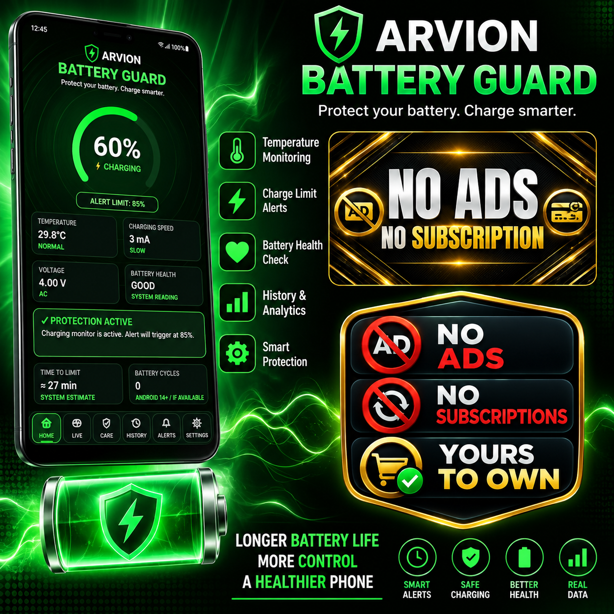
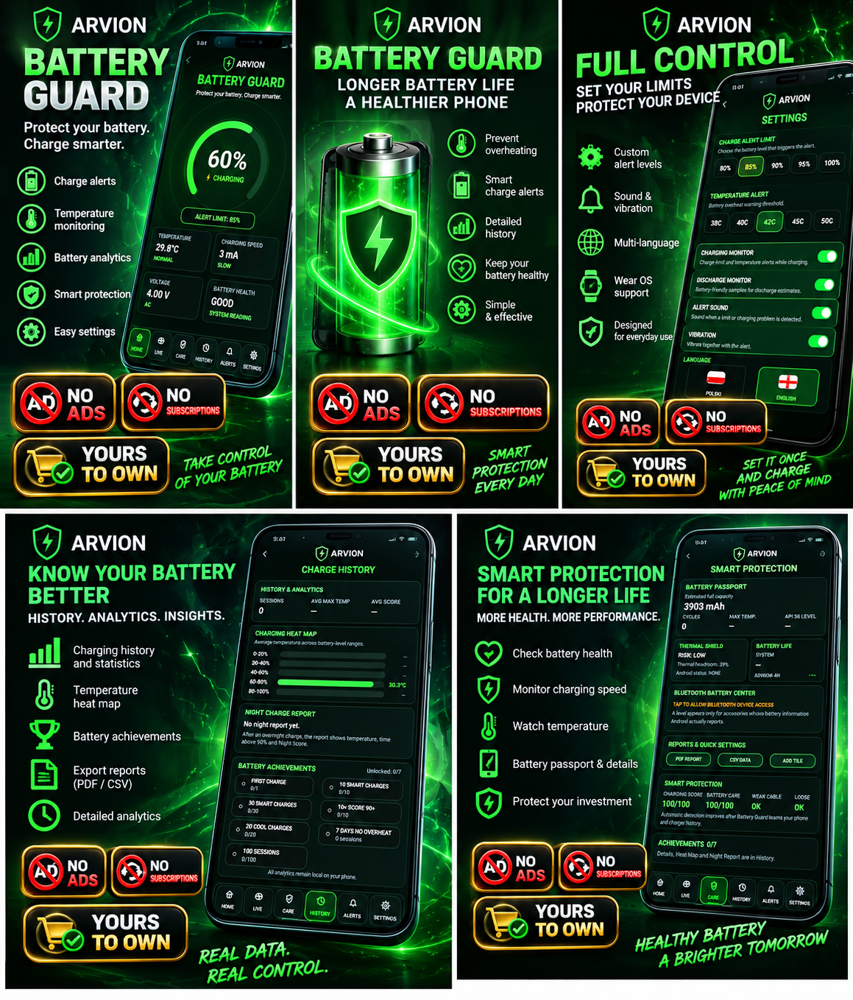
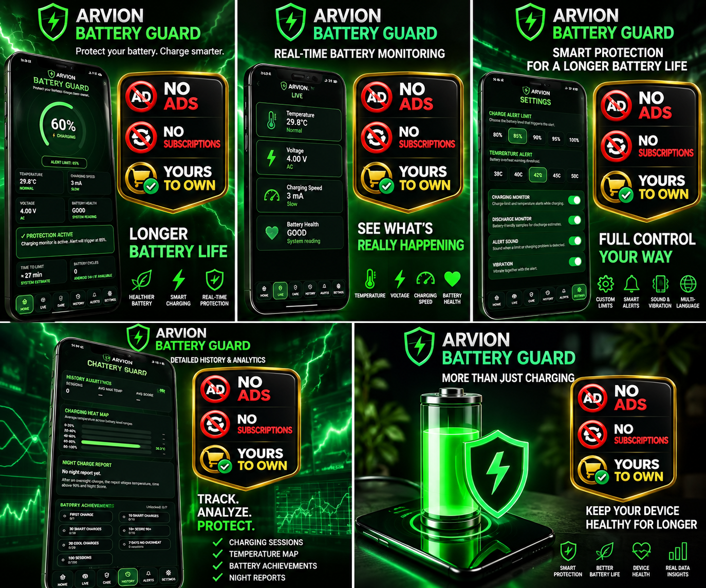
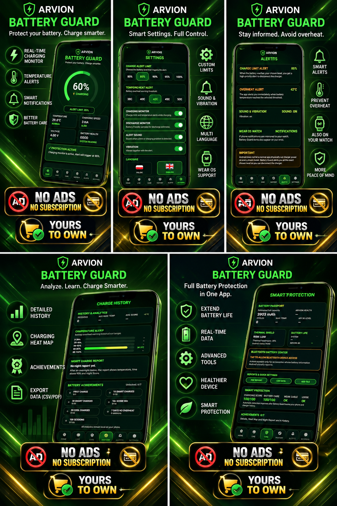
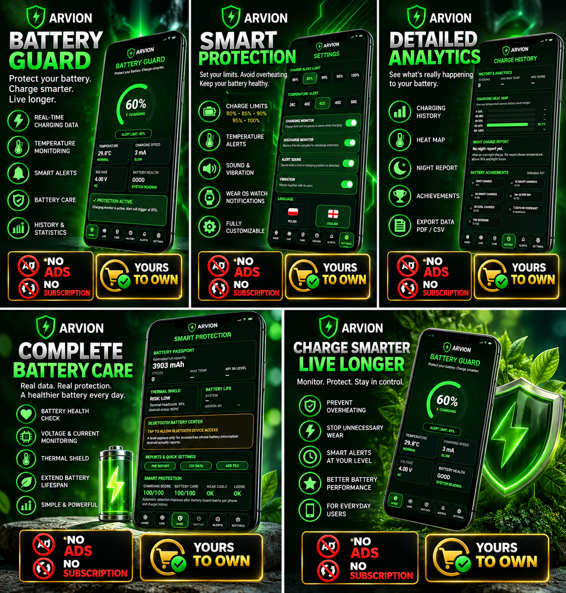
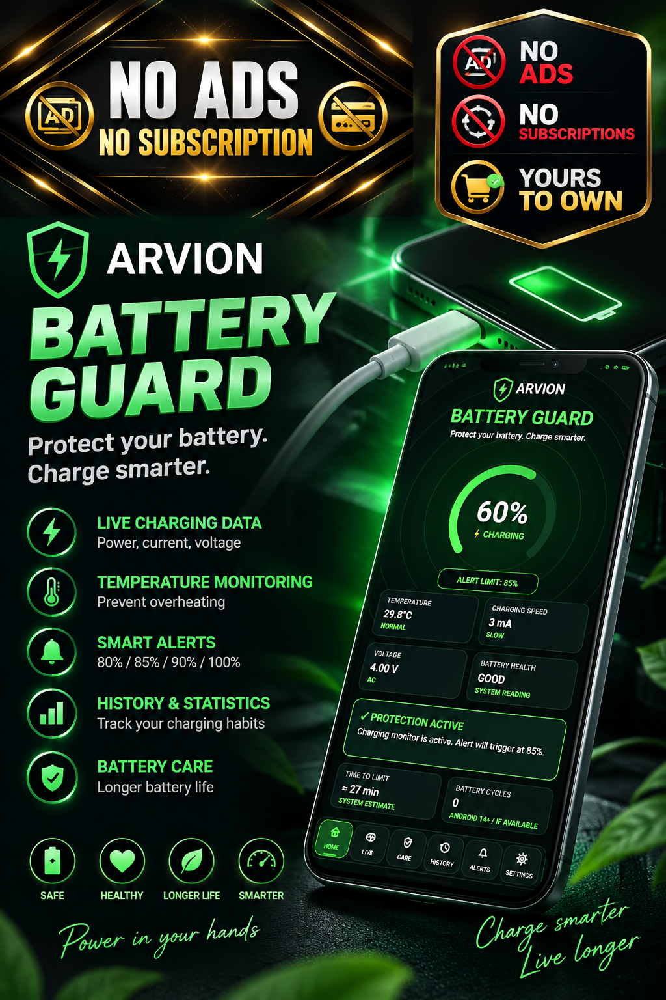

⚡ POTÊNCIA DE CARREGAMENTO EM TEMPO REAL
Monitore potência, corrente e tensão durante o carregamento e compare diferentes carregadores e cabos.
Monitor de bateria, potência, temperatura e alertas. Sem anúncios.
Pague uma vez e use sem anúncios ou mensalidades.






ARVION Battery Guard é um monitor de bateria e analisador de carregamento para Android. Acompanhe em tempo real a potência de carregamento, corrente, tensão, temperatura e informações disponíveis sobre a saúde da bateria.
Analise cada carregamento, receba alertas inteligentes e ajude a reduzir o calor excessivo e o desgaste desnecessário da bateria.
Monitore potência, corrente e tensão durante o carregamento e compare diferentes carregadores e cabos.
Acompanhe a temperatura enquanto o celular carrega e receba alertas quando ela ficar muito alta.
Escolha um limite de 80%, 85%, 90% ou 100%. O Battery Guard pode avisar quando o nível selecionado for atingido.
Analise seus hábitos de carregamento e consulte indicadores de cuidado e informações de saúde da bateria disponibilizadas pelo Android.
Consulte carregamentos anteriores, temperaturas, valores, pontuações e outras estatísticas úteis.
Veja em um só lugar informações como status, temperatura, tensão, saúde e ciclos quando fornecidas pelo dispositivo.
Analise o comportamento do carregador e os parâmetros de carregamento disponíveis.
Veja informações disponíveis sobre a bateria de dispositivos Bluetooth compatíveis.
Exporte estatísticas e informações de carregamento em PDF e CSV.
Observação: a disponibilidade e precisão de alguns parâmetros dependem do modelo, fabricante e versão do Android.